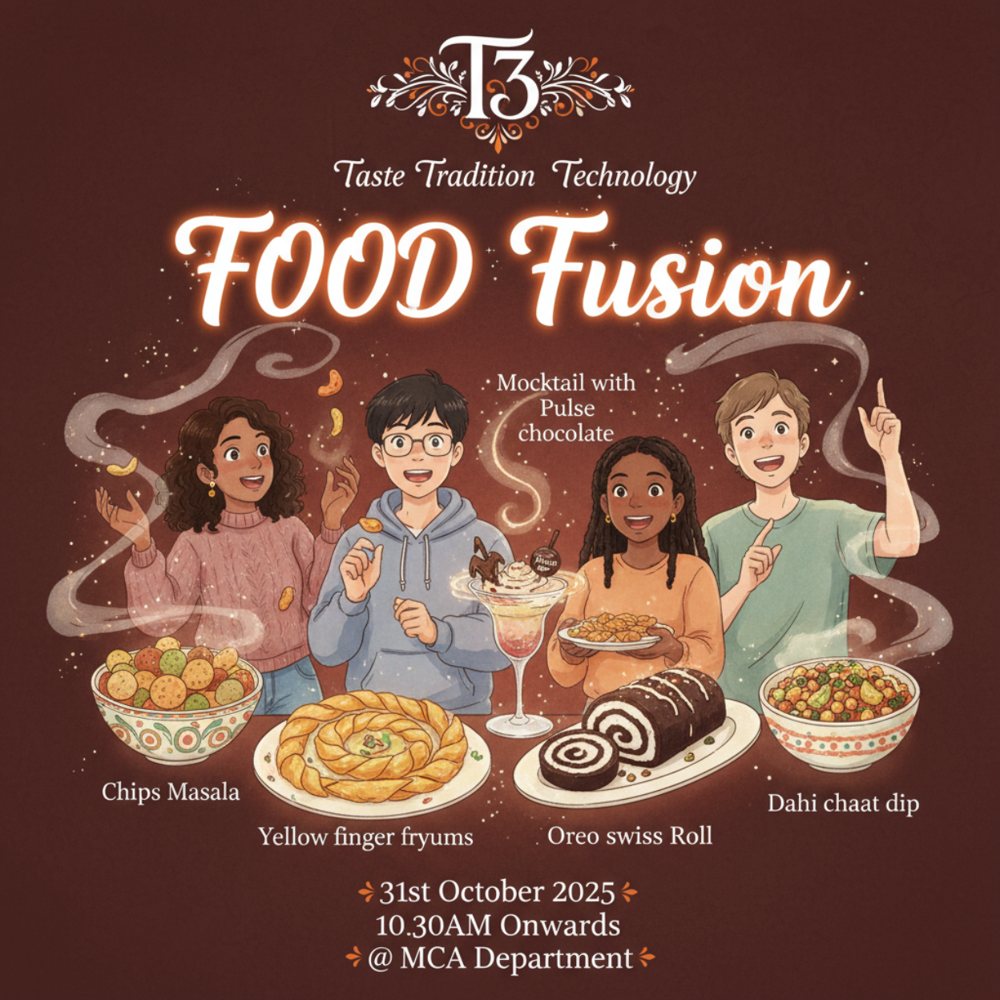

T3 Taste • Tradition • Technology
Food Fusion — A celebration of flavours, technique, and tech. Join us on 31st October 2025 at the MCA Dept, ATRIA Institute of Technology.
Street & Fusion Food
Workshops & Demos

Food Fusion — A celebration of flavours, technique, and tech. Join us on 31st October 2025 at the MCA Dept, ATRIA Institute of Technology.
T³ (Taste ⋅ Tradition ⋅ Technology) is a food fest created to explore culinary roots and future. Expect live demos, tasting booths, fusion experiments and a focus on mindful eating.